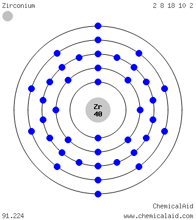

|
|
||
|
Circón Es un metal brillante de color blanco grisáceo. Si se divide en partes muy pequeñas, el metal de circonio puede encenderse espontáneamente en el aire. Es abundante en estrellas de tipo S, el Sol, los meteoritos y las muestras de rocas lunares. El circonio natural incluye cinco isótopos y existen otros quince. El circonio es excepcionalmente resistente a la corrosión por ácidos y bases comunes, agua de mar y otros agentes. En su aleación con cinc, adquiere propiedades magnéticas cuando se enfría a temperaturas inferiores a 35 °K. El circonio se utiliza cuando se necesitan agentes corrosivos y es un componente en tubos de vacío, agentes de aleación, aparatos quirúrgicos, bombillas de flases fotográficos, cebadores explosivos, hileras de rayón y filamentos de lámparas. |
 |
DATOS Número Atómico: 40 Peso Atómico: 91.22 Electronegatividad: 1,4 Configuración Electrónica: 4d25s2 Estados de Oxidación: +4 No. de Electrones de Valencia: 4 |